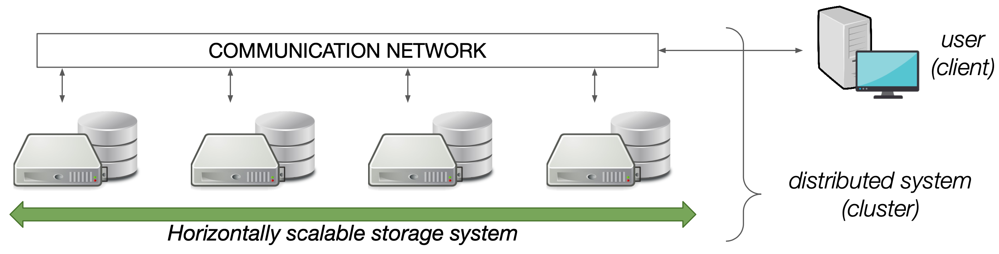
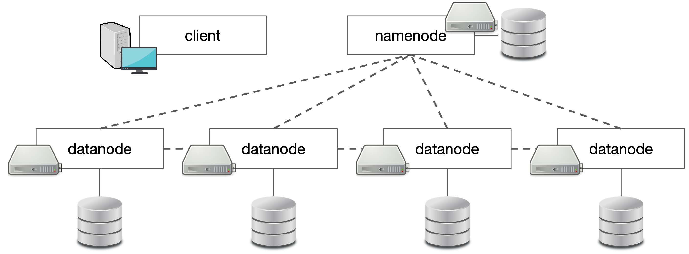
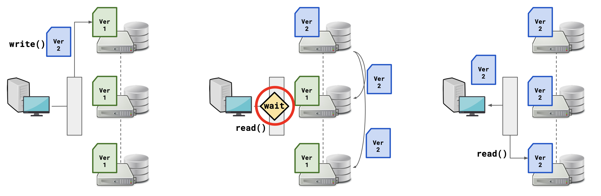
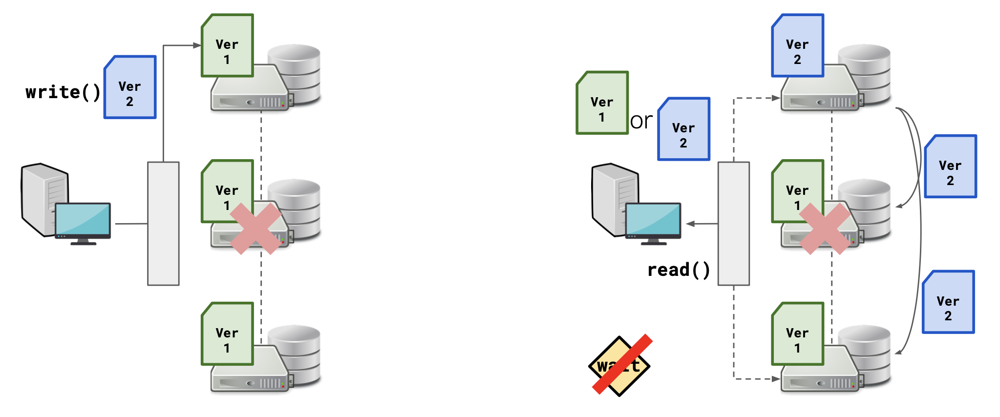
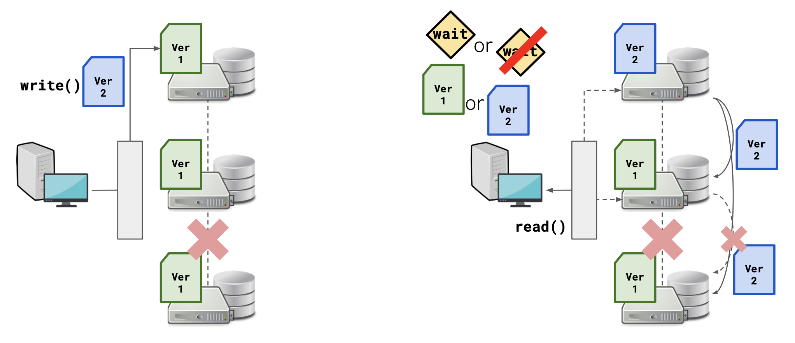
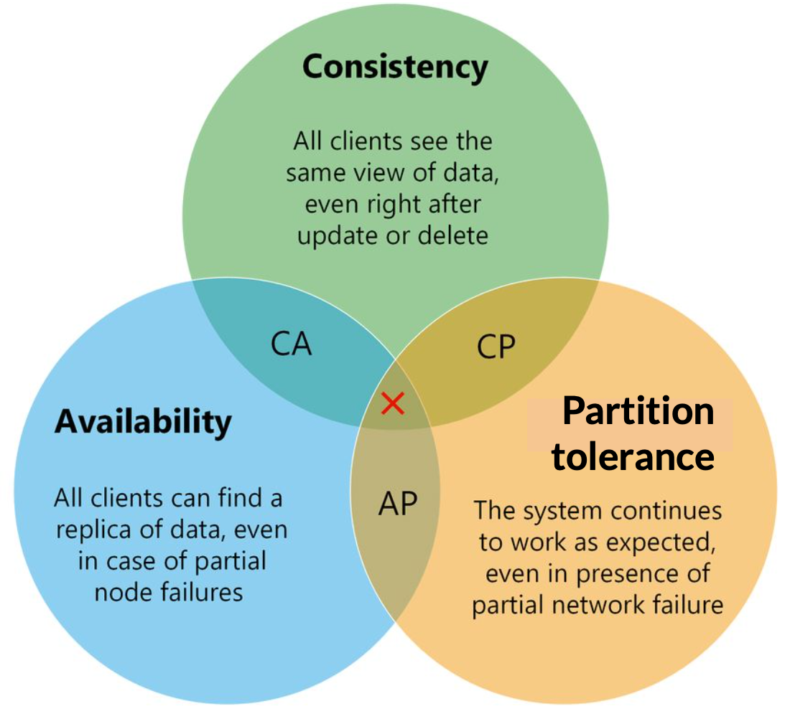

5 Distributed File System
To apply a file system to a horizontally scaled system we must move from local file systems to distributed file systems, indicated with DFS (Distributed File Systems). In technical terms, a cluster is a set of computing resources — computers called nodes of the cluster. The user typically connects from outside the cluster through a client program. The individual nodes are connected to each other through a very fast communication network, which the external user also accesses directly, meaning the user does not have an atomic view of the individual nodes in the cluster.

5.1 Operation
Some well-known DFS implementations:
- NFS (Network File System): built for UNIX operating systems, the most widespread at the user level.
- AFS (Andrew File System): suitable for academic purposes in research environments.
- Lustre: specifically designed for the HPC (High Performance Computing) field to maximize throughput and manage huge amounts of data.
- EOS (Elastic Object Storage): developed at CERN to mainly manage large amounts of unstructured data.
The table below summarises the major DFS implementations and their release years:
| DFS | Year | Notes |
|---|---|---|
| NFS (Network File System) | 1984 | Sun Microsystems; still widely used |
| AFS (Andrew File System) | 1986 | Carnegie Mellon; predecessor to OpenAFS |
| Lustre | 2003 | High-performance computing clusters |
| GFS (Google File System) | 2003 | Inspired HDFS design |
| HDFS | 2006 | Apache Hadoop; based on GFS paper |
| EOS | 2010 | CERN; used for LHC data |
All DFS share the same basic operation: data (together with metadata) are divided into files, in turn broken into memory blocks of fixed size distributed in various positions but always traceable through indexes and pointers.
The main differences with respect to local file systems are three:
- The block sizes are divided on different machines, so for the position not only the memory address must be specified but also the machine itself.
- Since operations must act on different machines to work on the same file, the latency inevitably increases, adding the communication network latency to the inherent mechanical latency.
- Due to the previous point, block sizes are larger than those typical of local file systems — on the order of megabytes — in order to maximize the amount of data extracted from each position.
Three ideal requirements for a DFS:
- Transparency: the user should not feel any difference working with a DFS compared to a local file system; the dispersion of data on multiple computers must be as little evident as possible.
- Fault tolerance: the ability to keep all operations active despite the failure of some infrastructures.
- Scalability: extensibility to new nodes in the cluster in a simple and practical way.
5.2 Example: HDFS
The HDFS (Hadoop Distributed File System) is an open-source DFS created in 2006 to emulate through reverse engineering the GFS (Google File System) introduced by Google three years earlier. It was created to manage and process large amounts of data on commodity hardware — relatively cheap and easily available devices — using standard TCP/IP protocols.
In HDFS there is a special node called the namenode, which contains the metadata of all the files and has the role of accepting or rejecting requests from users. All other nodes, called datanodes, host file blocks of \(128\ \text{MB}\) each.
Local file systems (e.g. ext4, NTFS) typically use a block size of 4 KB. HDFS uses a dramatically larger default block size of 128 MB (increased from 64 MB in Hadoop 2.x; the value is configurable). The large block size serves two purposes:
- NameNode memory: the NameNode must keep an entry in memory for every block across the entire cluster. Fewer, larger blocks means far fewer metadata entries to track, reducing NameNode RAM pressure.
- Seek overhead: for the large sequential reads that are typical in data-analysis workloads, spending time seeking to the start of a 128 MB block is amortised over much more useful data transfer than it would be for a 4 KB block.

Each operation is divided into four steps:
- The client sends its request (read, write, delete, etc.) directly to the namenode.
- The namenode verifies authorizations and permissions, then provides the client with the positions of the relevant data blocks.
- The client acts directly on the datanodes containing those blocks, without going through the namenode.
- The datanodes signal to the client that the operation is complete.
Fault tolerance in HDFS involves three types of failures:
Network instability: each datanode repeatedly sends a heartbeat signal to the namenode. When this heartbeat is missing, the namenode excludes that node until the heartbeat is restored.
Datanode failure: data blocks are copied to different nodes (by default, three copies) so that if a datanode fails, the data is not lost.
Namenode failure: this is the worst possible failure — a Single Point Of Failure (SPOF). The data itself is not lost, but the information on how to compose files from blocks is lost. To mitigate this, HDFS introduces a Secondary NameNode.
Secondary NameNode — what it is and what it is notThe Secondary NameNode is not a hot standby. If the Primary NameNode crashes, HDFS does not automatically recover — manual intervention is required.
Its actual job is checkpointing: it periodically fetches the Primary NameNode’s fsimage (a snapshot of the entire namespace) together with the edit log (a journal of every change made since the last snapshot), merges them into a new, up-to-date fsimage, and sends the result back to the Primary NameNode.
Without this merging the edit log would grow without bound, and restarting the Primary NameNode after a crash would require replaying an arbitrarily long sequence of edits — making startup extremely slow. Periodic checkpointing keeps the edit log short and the startup time bounded.
5.3 CAP Theorem
For distributed systems, a theorem mathematically demonstrated by Eric Brewer — known as the CAP theorem — states the following:
It is impossible for a distributed system to provide simultaneously more than two of the three CAP guarantees (consistency, availability and partition tolerance).
The three guarantees:
Consistency (C): every request from every client to any datanode must result in the same copy of the saved information. To apply this, a “waiting line” is introduced: after a client modifies a file, all other copies are updated before any further operation is allowed.

Example of consistency in case of writing to a file Availability (A): every request from every client must correspond to an immediate response, regardless of the state of the data and the non-functioning of some network nodes. This means minimizing latency and supporting multiple simultaneous clients. However, this creates a race competition — a client may read an outdated version right after writing.

Example of availability in case of writing and subsequent reading Partition tolerance (P): the system must continue to operate regardless of cuts to the communication lines between nodes (network partitions).

Example of partition tolerance in case of writing to a file
In a distributed system it is not possible to avoid partition tolerance, so the practical choice reduces to:
- CP system: tendentially slower in response but guarantees consistency in reading by multiple clients.
- AP system: fast in reading but no guarantee that the available data is updated to the latest version.

The choice depends on the use case: high-level computing systems like Lustre prefer AP for rapid access to constantly updated data; banking systems prefer CP for guaranteed consistency. The AC combination is not viable for distributed systems but is used for vertically scalable systems where partition tolerance is not needed.
5.4 Exercises
Explain how a client interacts with HDFS when it wants to write a file. Describe the roles of the NameNode and DataNodes in this process.
Solution. (To be completed.)
What is meant by a heartbeat in a distributed system such as HDFS? What is its main role, and what happens if heartbeats stop?
Solution. (To be completed.)
What happens in HDFS when a DataNode fails? How does HDFS detect the failure and what corrective actions does it take?
Solution. (To be completed.)
How is fault tolerance implemented in HDFS? Describe the mechanisms used to ensure data durability in the presence of hardware failures.
Solution. (To be completed.)
Can we create a system that behaves as AC (Available + Consistent) in a distributed file system? Relate your answer to the CAP theorem.
Solution. (To be completed.)
Explain the CAP Theorem in the context of a distributed computing system. Define each of the three properties and explain why only two can be fully guaranteed simultaneously.
Solution. (To be completed.)
Describe the CAP theorem and discuss how it guides the design and implementation of distributed databases.
Solution. (To be completed.)
Does the CAP theorem apply to databases? Discuss with examples of real database systems.
Solution. (To be completed.)
Describe how the CAP theorem applies to ATM booths of a banking system. Which two properties does this system typically prioritise, and why?
Solution. (To be completed.)
Describe how the CAP theorem applies to a live chat system that wants to deliver messages as quickly as possible. Which CAP combination does this system choose?
Solution. (To be completed.)
How would you classify the database management system of a social media platform that wants to upload messages as quickly as possible? Describe it using the CAP theorem framework (as an AP system).
Solution. (To be completed.)
Discuss Availability–Partition tolerance (AP) distributed systems according to the CAP theorem. What consistency guarantees do AP systems provide, and what do they sacrifice?
Solution. (To be completed.)
Discuss the consistency and availability trade-off in distributed NoSQL databases. How do different systems position themselves along this spectrum?
Solution. (To be completed.)
Explain the CAP theorem in the context of both relational and NoSQL databases. How do traditional RDBMS systems typically position themselves compared to NoSQL systems?
Solution. (To be completed.)
What is the difference between the “C” (Consistency) in the CAP theorem and the “C” (Consistency) in the ACID model? Are they the same concept?
Solution. (To be completed.)
Explain the concept of Consistency from the perspective of the CAP theorem. How does it differ from eventual consistency?
Solution. (To be completed.)
What is the meaning of “Partition” in the context of the CAP theorem? Why is partition tolerance generally considered non-negotiable in distributed systems?
Solution. (To be completed.)
Why is partition tolerance crucial in distributed systems? What would happen to a distributed system that does not tolerate network partitions?
Solution. (To be completed.)
What are the different ways to partition (shard) databases? Describe at least three partitioning strategies and their trade-offs.
Solution. (To be completed.)
MongoDB is a NoSQL database focused on consistency. Does it mean it is CA or CP (or perhaps somewhere in the middle)? Motivate your answer with reference to MongoDB’s replication and failover mechanisms.
Solution. (To be completed.)